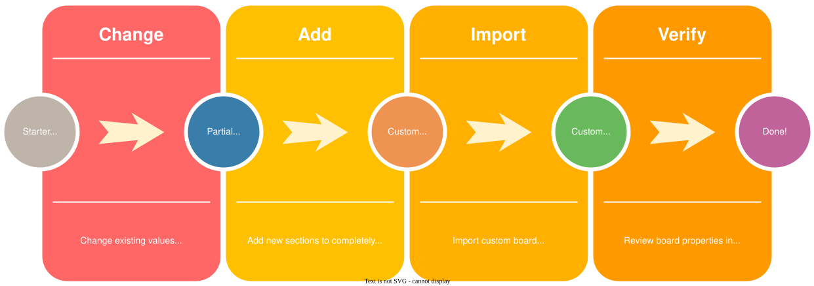

6.6.5. 创建自定义板级配置¶
复制 起始板级定义 到文本编辑器中，以您选择的文件名保存到本地磁盘，然后按照 图 6.10。
{kind=link}

图 6.10 创建自定义板级配置的流程。¶
修改现有值。 详细指导见下文 修改起始板级定义。
添加新节 以完全定义自定义板。详细指导见下文 向板级定义添加参数。
导入自定义板级文件 在 motorBench® Development Suite 中。
查看板级属性 在 Configure → Board 中。
或者——导出一个 Microchip 开发板，并根据需要编辑该板级定义文件以匹配自定义板设计。
6.6.5.1. 起始板级文件¶
起始板级文件提供了 motorBench 所需的最基本内容。请访问 motorBench 发行仓库获取起始板级文件的副本。
6.6.5.2. 修改起始板级定义¶
- 更改器件
更新
characteristics.device为您的板上的特定数字信号控制器器件。注
确保在您的 MPLAB® X 项目中选择的器件与此器件一致。
- 更改默认 PWM 频率
更新
characteristics.pwm.frequency.default为所需的 PWM 频率（单位 Hz）。用于 PWM 频率 系统参数 的初始值（在选择此板之后）。
注
在
characteristics.pwm.frequency，default必须在minimum和maximum：
minimum\(\le\)default\(\le\)maximum。- 更改默认 DC 母线电压
更新
characteristics.voltage.dcLink.default为所需的 DC 母线电压。用于标称 DC 母线电压 系统参数 的初始值（在选择此板之后）。
注
在
characteristics.voltage.dcLink，default必须在minimum和maximum：
minimum\(\le\)default\(\le\)maximum。- 更改满量程测量范围
将以下项目更新为您板子的满量程测量能力：
characteristics.current.dcLink.fullscalecharacteristics.current.phase.fullscalecharacteristics.voltage.dcLink.fullscalecharacteristics.voltage.phase.fullscale
- 更改 PWM 故障配置
PWM 故障信号一旦触发，会在外部检测到过流或过压等故障时自动关闭 PWM 通道。要为 PWM 故障信号配置 MCAF，请更新
source和polarity属性（属于peripherals.pwm.fault。- 更改 PWM 通道到电机相位的映射
更新
peripherals.pwm.generators以更改电机相位 A、B、C 与相应 PWM 发生器之间的映射。例如：如果相位 A 由 PWM3 生成，相位 B 由 PWM4 生成，相位 C 由 PWM1 生成，则板级定义应包含：peripherals： pwm： generators： a： 3 b： 4 c： 1
- 更改电流检测通道支持
更新
peripherals.adc.current以适当添加或移除通道。这定义了可用于电流检测的 ADC 输入。例如，LVMC 33CK 板包含全部四个通道：
peripherals： adc： current： a： channel： AN0 inverted： true signed： true b： channel： AN1 inverted： true signed： true c： channel： AN10 inverted： true signed： true dcLink： channel： AN4 inverted： false signed： true
注
motorBench/MCAF 支持多种电流测量配置：
三通道电流检测（A、B、C）
双通道电流检测（仅 A、B）
单通道电流检测（DC 母线）
参见 电流极性约定 以确定您板上各通道的 inverted 应为 true 还是 false。
- 更改振荡器配置
更新
peripherals.oscillator.clockSource为 时钟源选项 中列出的有效时钟源选项之一。
6.6.5.3. 向板级定义添加参数¶
可以向板级定义添加新内容，但必须符合 自定义板级 schema。
在某些情况下，如果父键尚不存在，则需要在适当位置添加新节。请参阅以下指导以获取更具体的细节。
- 添加 MCAF UI GPIO
在 GPIO 通道 下指定 MCAF
peripherals.gpio的引脚映射，用于 通用 UI 指南中推荐的接口功能，格式如下：<MCAFGpioName>: pin: <pin name> direction: <input/output> polarity: <active-high/active-low>
例如，dsPIC33CK 低压电机控制（LVMC）开发板上所有可能的 MCAF 兼容 GPIO 配置如下：
peripherals： gpio： MCAF_BUTTON1： direction： "input" pin： "RE11" polarity： "active-high" MCAF_BUTTON2： direction： "input" pin： "RE12" polarity： "active-high" MCAF_LED1： direction： "output" pin： "RE6" polarity： "active-high" MCAF_LED2： direction： "output" pin： "RE7" polarity： "active-high" MCAF_TESTPOINT1： direction： "output" pin： "RE4" polarity： "active-high"
- 添加电位器配置
在 模拟通道 下指定 MCAF
peripherals.adc的引脚映射，用于 通用 UI 指南中推荐的接口功能，格式如下：other: potentiometer: channel: ANx signed: <true/false>例如，dsPIC33CK 低压电机控制（LVMC）开发板上的 MCAF 电位器 ADC 配置如下：
peripherals： adc： other： potentiometer： channel： "AN11" signed： true
- 添加 UART 引脚映射
在
peripherals.uart.pins下指定 RX 和 TX 信号的引脚映射，格式如下：peripherals： uart： pins： RX： "R<port><number>" TX： "R<port><number>"
注
仅支持一个 UART 实例，该 UART 将由 MCAF 专用于实时诊断。
- 添加新的自定义 ADC 通道
在
peripherals.adc.custom下指定 RX 和 TX 信号的引脚映射，格式如下：custom: <channelName>: channel: ANx signed: <true/false>两个模拟通道的自定义模拟通道指定示例：
peripherals： adc： current： ... voltage： ... custom： sineInput： channel： AN2 signed： true cosineInput： channel： AN3 signed： true
注
自定义名称
<channelName>应为有效的 C 标识符（不含空格或除下划线外的特殊字符）。- 添加新的自定义 GPIO
在 自定义 GPIO 通道 下指定 MCAF
peripherals.gpio下指定 RX 和 TX 信号的引脚映射，格式如下：<customGpioName>: pin: <pin name> direction: <input/output> polarity: <active-high/active-low>
引脚、方向和极性是指定 GPIO 通道所需的最少属性集。
如果需要，GPIO 通道指定中可以包含以下附加 GPIO 属性：
<customGpioName>: pin: <pin name> direction: <input/output> polarity: <active-high/active-low> openDrain: <true/false> weakPullUp: <true/false> weakPullDown: <true/false> startHigh: <true/false>
以下配置是引脚 RA1 上自定义 GPIO 的指定示例，配置为输出、高电平有效、带上拉电阻。
peripherals： gpio： customgpio1： pin： RA1 direction： output polarity： active-high weakPullUp： true
注
自定义名称
<customGpioName>必须为有效的 C 标识符（不含空格或除下划线外的特殊字符）。- 添加内部比较器配置
在
peripherals.comparator下指定 RX 和 TX 信号的引脚映射，格式如下：source: CMP<instance><muxinput> inverted: <true/false> threshold: <fraction>
Source、inverted 和 threshold 是完全指定比较器所需的必填字段。
以下配置是 CMP1 的指定示例，配置为将其 mux 输入“C”处的模拟信号与内部 DAC 参考值 (0.95*Add) 进行比较，并输出非反相逻辑信号：
peripherals： comparator： source： CMP1C inverted： false threshold： 0.95
注
目前，motorBench 仅允许指定一个内部比较器。
- 添加内部运放配置
在
peripherals.opamp下指定 RX 和 TX 信号的引脚映射，格式如下：enabled: - <numbertoenable> - <numbertoenable> - <numbertoenable>
启用内部运放 1 和 3 的指定示例：
peripherals： opamp： enabled： - 1 - 3
- 添加 QEI 配置
在
peripherals.qei下指定 RX 和 TX 信号的引脚映射，格式如下：pins: A: <port for phase-A> B: <port for phase-B> Z: <port for index pulse>
如果指定了 QEI 配置，则 phase-A 和 phase-B 为必填，而 index (Z) 为可选。
以下是在端口引脚 RC12、RC13 和 RC14 上分别启用 QEI 的 phase-A、phase-B 和 Index 输入的指定示例。
peripherals： qei： pins： A： RC12 B： RC13 Z： RC14
注
目前，motorBench 仅允许指定一个 QEI 外设实例。
- 添加逆变桥温度传感器配置
在
peripherals.adc.other下指定 RX 和 TX 信号的引脚映射，格式如下：bridgeTemperature: channel: ANx signed: <true/false> offset: <voltage> gain: <fraction>
例如，dsPIC33CK LVMC 板包含一个 MCP9700 温度传感器，对应的板级定义包含：
peripherals： adc： other： bridgeTemperature： channel： AN12 signed： false offset： 0.5 gain： 0.50354
注
MCAF 温度传感器支持目前仅限于线性温度传感器。这些传感器通常规格为 10 mV/°C，在 0 °C 时有给定的电压偏移；例如 MCP9700 规格为 10 mV/°C，0 °C 时偏移 500mV。
bridgeTemperature.offset以 0 °C 时的电压 [V] 表示。bridgeTemperature.gain是在将完整 ADC 范围映射到 0–65535 计数范围后，将温度缩放至 0.01 °C/计数所需的 ADC 增益。对于 AVdd = 3.3V，1 °C 的增量 → 10 mV → 0.01 V / 3.3 V × 65536 = 198.594 计数。要将其缩放为每 °C 100 计数，需要乘以 100 / 198.594 = 0.50354。一般而言，bridgeTemperature.gain\(G_T\) 的公式为(6.2)¶\[G_T = \frac{100 AV_{dd}}{2^{16} K_V}\]其中 \(K_V\) 是温度传感器每 °C 的电压增益。另一个例子， MCP9701 规格为 19.5 mV/°C，偏移 400 mV，因此使用 MCP9701 且模拟供电电压 AVdd = 3.3V 的板级定义应包含 \(G_T = \frac{100 \cdot 3.3}{65536 \cdot 0.0195}\) = 0.25823：
peripherals： adc： other： bridgeTemperature： offset： 0.4 gain： 0.25823
- 添加 SiP 器件配置
在
characteristics下指定 RX 和 TX 信号的引脚映射，格式如下：device: dsPIC33CDV[C/L][64/256]M[P/C]XXX gateDriver: device: MCP8021 configuration: sleepMode: <standby/sleep> shortCircuitDetect: <true/false> underVoltageLockout: <true/false> pins: RX: R<port><number> TX: R<port><number> fault: R<port><number> outputEnable: R<port><number>例如，使用 dsPIC33CDVC256MP506 器件的板配置如下：
characteristics： device： dsPIC33CDVC256MP506 gateDriver： device： MCP8021 configuration： sleepMode： standby shortCircuitDetect： false underVoltageLockout： false pins： RX： RC12 TX： RC12 fault： RB12 outputEnable： RB13
注
以下 MCP8021 的附加参数由 motorBench/MCAF 预配置，不能直接修改。参见 configuration 以获取更多信息。
driverDeadTime： 250 driverBlankingTime： 4000 overcurrentLimit： 1.0
注：所有 SiP 器件均配备单一栅极驱动器选项 MCP8021，且微控制器与栅极驱动器器件之间的引脚连接为硬连线。
- 添加 MCP8021 栅极驱动器配置
在
characteristics下指定 RX 和 TX 信号的引脚映射，格式如下：gateDriver: device: MCP8021 configuration: sleepMode: <standby/sleep> shortCircuitDetect: <true/false> underVoltageLockout: <true/false> pins: RX: R<port><number> TX: R<port><number> fault: R<port><number> outputEnable: R<port><number>例如，使用 dsPIC33CK256MP508 和 MCP8021 栅极驱动器的板配置如下：
characteristics： device： dsPIC33CK256MP508 gateDriver： device： MCP8021 configuration： sleepMode： standby shortCircuitDetect： false underVoltageLockout： false pins： RX： RB8 TX： RB9 fault： RB4 outputEnable： RA2
注
以下 MCP8021 的附加参数由 motorBench/MCAF 预配置，不能直接修改。参见 configuration 以获取更多信息。
driverDeadTime： 250 driverBlankingTime： 4000 overcurrentLimit： 1.0
- 添加 MCP8022 栅极驱动器配置
在
characteristics下指定 RX 和 TX 信号的引脚映射，格式如下：gateDriver: device: MCP8022 configuration: sleepMode: <standby/sleep> shortCircuitDetect: <true/false> underVoltageLockout: <true/false> opampEnabledDuringDeviceStandby: <true/false> pins: RX: R<port><number> TX: R<port><number> fault: R<port><number> outputEnable: R<port><number>例如，使用 dsPIC33CK256MP508 和 MCP8022 栅极驱动器的板配置如下：
characteristics： device： dsPIC33CK256MP508 gateDriver： device： MCP8022 configuration： sleepMode： standby shortCircuitDetect： false underVoltageLockout： false opampEnabledDuringDeviceStandby： true pins： RX： RB8 TX： RB9 fault： RB4 outputEnable： RA2
注
以下 MCP8022 的附加参数由 motorBench/MCAF 预配置，不能直接修改。参见 configuration 以获取更多信息。
driverDeadTime： 250 driverBlankingTime： 4000 overcurrentLimit： 1.0
- 添加 MCP8027 栅极驱动器配置
在
characteristics下指定 RX 和 TX 信号的引脚映射，格式如下：gateDriver: device: MCP8027 configuration: sleepMode: <standby/sleep> shortCircuitDetect: <true/false> underVoltageLockout: <true/false> linPullUpsEnabled: <true/false> dacReference: <voltage> pins: RX: R<port><number> TX: R<port><number> fault: R<port><number> outputEnable: R<port><number>例如，使用 dsPIC33CK256MP508 和 MCP8027 栅极驱动器的板配置如下：
characteristics： device： dsPIC33CK256MP508 gateDriver： device： MCP8027 configuration： sleepMode： standby shortCircuitDetect： false underVoltageLockout： false linPullUpsEnabled： false dacReference： 1.872 pins： RX： RB8 TX： RB9 fault： RB4 outputEnable： RA2
注
以下 MCP8027 的附加参数由 motorBench/MCAF 预配置，不能直接修改。参见 configuration 以获取更多信息。
driverDeadTime： 250 driverBlankingTime： 4000 overcurrentLimit： 1.0
- 为 PWMxH 和 PWMxL 互换的板添加 PWM 交换配置
在
peripherals.pwm.outputSwap下指定 RX 和 TX 信号的引脚映射，格式如下：peripherals: pwm: outputSwap: a: <true/false> b: <true/false> c: <true/false>例如，以下配置将交换分配给相位 A 和相位 B 的 PWM 发生器的 PWMxH 和 PWMxL 输出。
peripherals： pwm： outputSwap： a： true b： true c： false
6.6.5.4. 添加非 MCAF UART¶
motorBench® Development Suite 仅配置板级定义文件和 motorBench 设置中定义的资源。板级定义文件中配置的 UART 专用于 MCAF 实时诊断（见 添加 UART 引脚映射）。
要使用额外的 UART，请先用 motorBench 生成代码，然后通过 MCC Melody 单独添加额外的 UART 实例。同样的原则适用于 motorBench 未管理的其他外设，如附加定时器或 CAN。
6.6.6. 板级定义文件验证¶
导入自定义板时，motorBench 会验证板级定义以确保其符合 自定义板级 schema。如果验证失败，motorBench 将显示详细说明所报告错误的错误消息。
6.6.7. 对 MCP802X 栅极驱动器的支持，包括基于 MCP8021 的 SiP（系统级封装）器件¶
MCAF 通过栅极驱动器固件模块支持 MCP802X 系列等智能栅极驱动器，该模块管理配置、诊断和故障处理等任务。通过在板级定义文件中指定使用 MCP802X 栅极驱动器，即可在 MCAF 中使用栅极驱动器。
6.6.7.1. 概述¶
栅极驱动器接口执行以下核心功能：
初始化： 将板级配置应用于栅极驱动器以准备使用。
使能/禁用控制： 安全地使能或禁用栅极驱动器电路。
周期性服务： 在运行期间保持与栅极驱动器的通信。
故障监控：捕获并存储故障条件以用于诊断或关断协议。
硬件抽象层（HAL）将这些功能提供给 MCAF 的高层组件，如系统板级服务和状态机。
6.6.7.2. 与 MCAF 的集成¶
当板级定义指定了栅极驱动器器件时，MCAF 会包含栅极驱动器模块。
这确保栅极驱动器已准备好正常运行。
6.6.7.3. 配置¶
motorBench® Development Suite 会自动使用微控制器的预设设置来配置 MCP802X 器件。
参数 |
摘要 |
|---|---|
|
设置 死区时间 ，即切换高侧和低侧 MOSFET 之间的时间，以防止直通。 |
|
设置电流检测比较器禁用的时间间隔。这可防止因开关噪声导致的误过流或短路检测。 |
|
通过监控电流检测输入的快速过流条件来启用和配置短路故障检测。 |
|
如果供电电压低于此定义的阈值，栅极驱动输出将被禁用以防止不当操作。 |
|
配置最大允许电流水平。如果超过，驱动器将关断或限制电流。 |
|
内部电路断电以降低静态电流。LIN 唤醒和其他唤醒条件可用于恢复完全运行。 |
|
允许内部运放在待机模式下保持活动，使外部信号调理电路在主驱动器不活动时仍能继续工作。 |
|
在 LIN（局域互联网络）总线引脚上启用内部上拉电阻。 |
|
配置内部 DAC 的参考电压，用于设置过流阈值。 |
注
所列配置参数的可用性和行为可能因 MCP8021、MCP8022 和 MCP8027 器件而异。请参阅特定器件的数据手册或板级定义 schema 以获取详细实现和有效设置。
MCAF 预配置以下参数以确保一致的行为：
driverDeadTime：MCP802X 不插入对称死区时间。为避免与微控制器生成的死区时间干扰，MCAF 将 MCP802X 配置为最小值（250 ns）。driverBlankingTime：设为最大值（4000 ns）以忽略开关引起的电流尖峰。overcurrentLimit：设为 1.0 V（最高允许值），将有效过流阈值留给 MCAF。
要覆盖这些默认值，请在 MCC Melody 应用构建器中使用 MCP802X EasyView 配置。MCC Melody MCP802X 接口支持栅极驱动器的自定义配置，可将其选为 motorBench 的默认配置。
6.6.7.4. 系统级行为¶
6.6.7.4.1. Initialization¶
栅极驱动器初始化例程配置栅极驱动器的所有相关控制引脚、通信参数和内部寄存器，然后使能运行。
6.6.7.4.2. Bootstrap sequence¶
MCAF 在继续进行 自举电容充电之前监控栅极驱动器的就绪状态。这确保了在依赖已充电自举电容的设计中实现正确的高侧开关。
6.6.7.4.3. Runtime service¶
MCAF 从板级服务层或主控制循环周期性调用栅极驱动器服务函数。这保持了与硬件的同步，处理故障轮询，并启用诊断功能。
6.6.7.4.4. Fault handling¶
栅极驱动器模块周期性地从栅极驱动器 IC 读取并存储故障标志。这使系统能够检测和响应欠压、过流或通信故障。